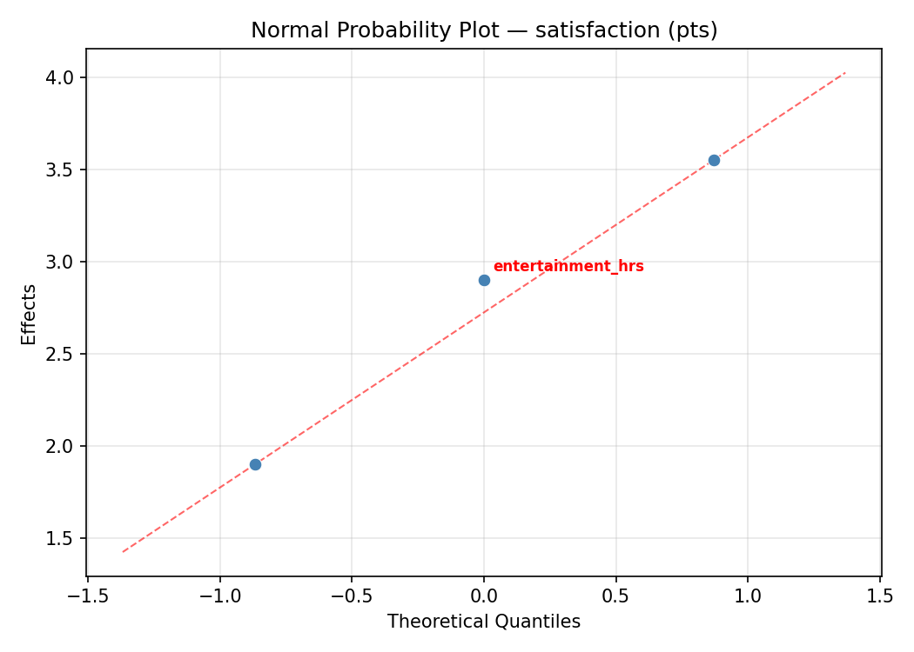
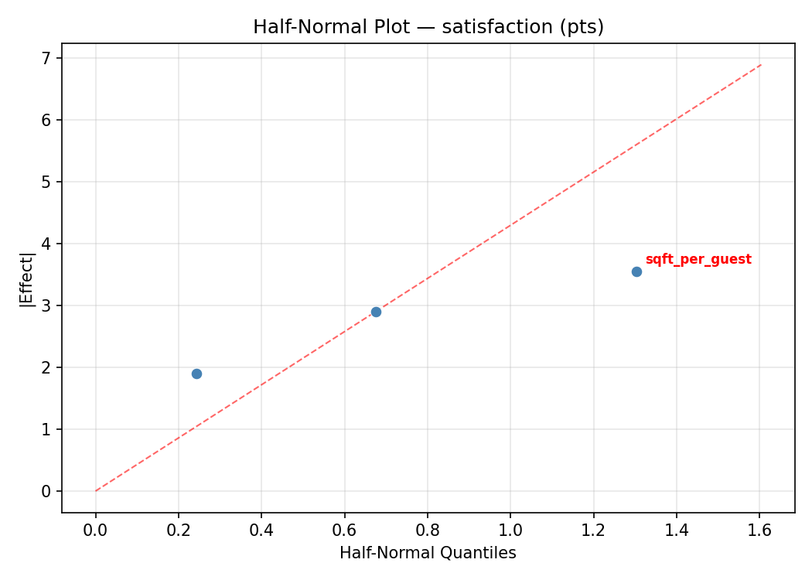
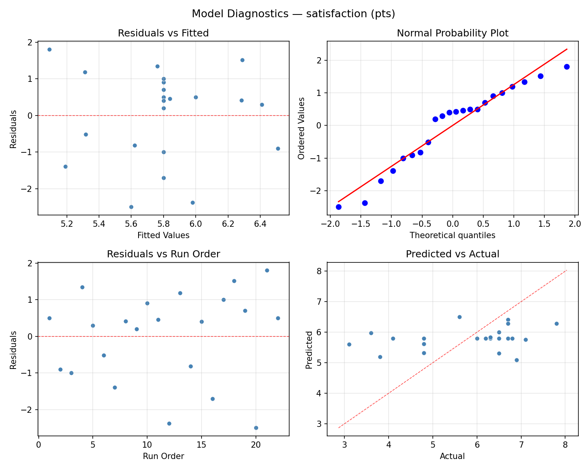
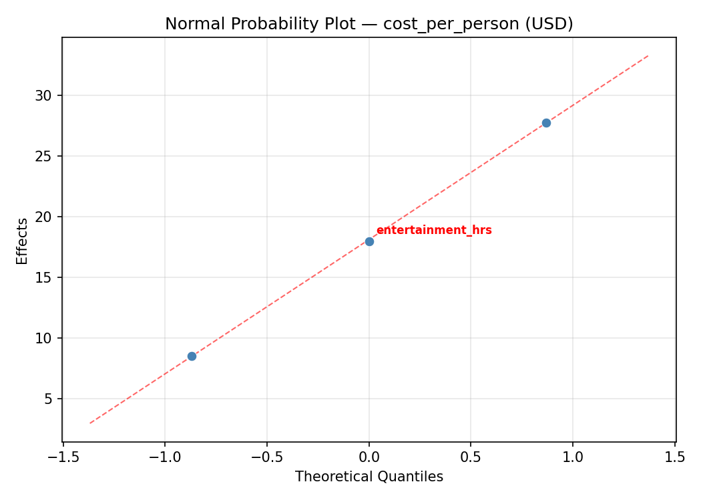
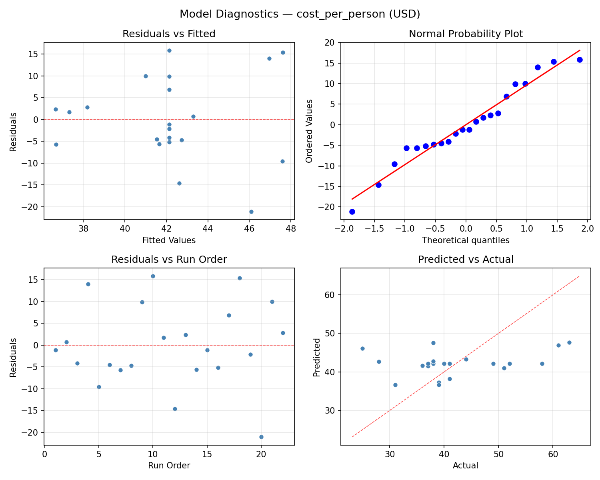

Summary
This experiment investigates party planning optimization. Central composite design to maximize guest satisfaction and minimize cost per person by tuning venue size, food budget ratio, and entertainment hours.
The design varies 3 factors: sqft per guest (sqft), ranging from 15 to 40, food budget pct (%), ranging from 30 to 60, and entertainment hrs (hrs), ranging from 1 to 4. The goal is to optimize 2 responses: satisfaction (pts) (maximize) and cost per person (USD) (minimize). Fixed conditions held constant across all runs include guests = 50, event type = birthday.
A Central Composite Design (CCD) was selected to fit a full quadratic response surface model, including curvature and interaction effects. With 3 factors this produces 22 runs including center points and axial (star) points that extend beyond the factorial range.
Quadratic response surface models were fitted to capture potential curvature and factor interactions. The RSM contour plots below visualize how pairs of factors jointly affect each response.
Key Findings
For satisfaction, the most influential factors were entertainment hrs (47.3%), food budget pct (28.4%), sqft per guest (24.3%). The best observed value was 7.8 (at sqft per guest = 27.5, food budget pct = 45, entertainment hrs = 2.5).
For cost per person, the most influential factors were entertainment hrs (55.4%), food budget pct (24.4%), sqft per guest (20.1%). The best observed value was 25.0 (at sqft per guest = 40, food budget pct = 60, entertainment hrs = 1).
Recommended Next Steps
- Run confirmation experiments at the predicted optimal settings to validate the model.
- Consider whether any fixed factors should be varied in a future study.
Experimental Setup
Factors
| Factor | Low | High | Unit |
|---|
sqft_per_guest | 15 | 40 | sqft |
food_budget_pct | 30 | 60 | % |
entertainment_hrs | 1 | 4 | hrs |
Fixed: guests = 50, event_type = birthday
Responses
| Response | Direction | Unit |
|---|
satisfaction | ↑ maximize | pts |
cost_per_person | ↓ minimize | USD |
Configuration
{
"metadata": {
"name": "Party Planning Optimization",
"description": "Central composite design to maximize guest satisfaction and minimize cost per person by tuning venue size, food budget ratio, and entertainment hours"
},
"factors": [
{
"name": "sqft_per_guest",
"levels": [
"15",
"40"
],
"type": "continuous",
"unit": "sqft"
},
{
"name": "food_budget_pct",
"levels": [
"30",
"60"
],
"type": "continuous",
"unit": "%"
},
{
"name": "entertainment_hrs",
"levels": [
"1",
"4"
],
"type": "continuous",
"unit": "hrs"
}
],
"fixed_factors": {
"guests": "50",
"event_type": "birthday"
},
"responses": [
{
"name": "satisfaction",
"optimize": "maximize",
"unit": "pts"
},
{
"name": "cost_per_person",
"optimize": "minimize",
"unit": "USD"
}
],
"settings": {
"operation": "central_composite",
"test_script": "use_cases/198_party_planning/sim.sh"
}
}
Experimental Matrix
The Central Composite Design produces 22 runs. Each row is one experiment with specific factor settings.
| Run | sqft_per_guest | food_budget_pct | entertainment_hrs |
|---|
| 1 | 27.5 | 45 | 2.5 |
| 2 | 40 | 30 | 4 |
| 3 | 15 | 60 | 1 |
| 4 | 27.5 | 72.3861 | 2.5 |
| 5 | 27.5 | 45 | 2.5 |
| 6 | 4.67823 | 45 | 2.5 |
| 7 | 27.5 | 45 | -0.238613 |
| 8 | 27.5 | 45 | 2.5 |
| 9 | 40 | 60 | 1 |
| 10 | 50.3218 | 45 | 2.5 |
| 11 | 27.5 | 45 | 2.5 |
| 12 | 27.5 | 17.6139 | 2.5 |
| 13 | 27.5 | 45 | 2.5 |
| 14 | 15 | 30 | 4 |
| 15 | 27.5 | 45 | 2.5 |
| 16 | 40 | 30 | 1 |
| 17 | 27.5 | 45 | 5.23861 |
| 18 | 40 | 60 | 4 |
| 19 | 27.5 | 45 | 2.5 |
| 20 | 15 | 30 | 1 |
| 21 | 15 | 60 | 4 |
| 22 | 27.5 | 45 | 2.5 |
Step-by-Step Workflow
1
Preview the design
$ python doe.py info --config use_cases/198_party_planning/config.json
2
Generate the runner script
$ python doe.py generate --config use_cases/198_party_planning/config.json \
--output use_cases/198_party_planning/results/run.sh --seed 42
3
Execute the experiments
$ bash use_cases/198_party_planning/results/run.sh
4
Analyze results
$ python doe.py analyze --config use_cases/198_party_planning/config.json
5
Get optimization recommendations
$ python doe.py optimize --config use_cases/198_party_planning/config.json
6
Multi-objective optimization
With 2 competing responses, use --multi to find the best compromise via Derringer–Suich desirability.
$ python doe.py optimize --config use_cases/198_party_planning/config.json --multi
7
Generate the HTML report
$ python doe.py report --config use_cases/198_party_planning/config.json \
--output use_cases/198_party_planning/results/report.html
Features Exercised
| Feature | Value |
|---|
| Design type | central_composite |
| Factor types | continuous (all 3) |
| Arg style | double-dash |
| Responses | 2 (satisfaction ↑, cost_per_person ↓) |
| Total runs | 22 |
Analysis Results
Generated from actual experiment runs using the DOE Helper Tool.
Response: satisfaction
Top factors: entertainment_hrs (47.3%), food_budget_pct (28.4%), sqft_per_guest (24.3%).
ANOVA
| Source | DF | SS | MS | F | p-value |
|---|
| Source | DF | SS | MS | F | p-value |
| sqft_per_guest | 4 | 9.2608 | 2.3152 | 2.167 | 0.1542 |
| food_budget_pct | 4 | 11.6983 | 2.9246 | 2.737 | 0.0966 |
| entertainment_hrs | 4 | 12.8808 | 3.2202 | 3.014 | 0.0781 |
| Lack | of | Fit | 2 | 0.0000 | 0.0000 |
| Pure | Error | 7 | 7.4800 | | |
| Error | 9 | 0.7200 | 1.0686 | | |
| Total | 21 | 34.5600 | 1.6457 | | |
Pareto Chart

Main Effects Plot

Normal Probability Plot of Effects

Half-Normal Plot of Effects

Model Diagnostics

Response: cost_per_person
Top factors: entertainment_hrs (55.4%), food_budget_pct (24.4%), sqft_per_guest (20.1%).
ANOVA
| Source | DF | SS | MS | F | p-value |
|---|
| Source | DF | SS | MS | F | p-value |
| sqft_per_guest | 4 | 376.1742 | 94.0436 | 0.847 | 0.5295 |
| food_budget_pct | 4 | 472.9242 | 118.2311 | 1.065 | 0.4275 |
| entertainment_hrs | 4 | 714.1742 | 178.5436 | 1.609 | 0.2539 |
| Lack | of | Fit | 2 | 0.0000 | 0.0000 |
| Pure | Error | 7 | 776.8750 | | |
| Error | 9 | 493.3182 | 110.9821 | | |
| Total | 21 | 2056.5909 | 97.9329 | | |
Pareto Chart

Main Effects Plot

Normal Probability Plot of Effects

Half-Normal Plot of Effects

Model Diagnostics

Response Surface Plots
3D surfaces fitted with quadratic RSM. Red dots are observed data points.
cost per person food budget pct vs entertainment hrs

cost per person sqft per guest vs entertainment hrs

cost per person sqft per guest vs food budget pct

satisfaction food budget pct vs entertainment hrs

satisfaction sqft per guest vs entertainment hrs

satisfaction sqft per guest vs food budget pct

Multi-Objective Optimization
When responses compete, Derringer–Suich desirability finds the best compromise.
Each response is scaled to a 0–1 desirability, then combined via a weighted geometric mean.
Overall Desirability
D = 0.7008
Per-Response Desirability
| Response | Weight | Desirability | Predicted | Dir |
|---|
satisfaction |
1.5 |
|
6.70 0.7418 6.70 pts |
↑ |
cost_per_person |
1.0 |
|
38.00 0.6435 38.00 USD |
↓ |
Recommended Settings
| Factor | Value |
|---|
sqft_per_guest | 27.5 sqft |
food_budget_pct | 45 % |
entertainment_hrs | 2.5 hrs |
Source: from observed run #5
Trade-off Summary
Sacrifice = how much worse than single-objective best.
| Response | Predicted | Best Observed | Sacrifice |
|---|
cost_per_person | 38.00 | 25.00 | +13.00 |
Top 3 Runs by Desirability
| Run | D | Factor Settings |
|---|
| #8 | 0.7008 | sqft_per_guest=40, food_budget_pct=30, entertainment_hrs=1 |
| #13 | 0.6684 | sqft_per_guest=4.67823, food_budget_pct=45, entertainment_hrs=2.5 |
Model Quality
| Response | R² | Type |
|---|
cost_per_person | 0.6310 | quadratic |
Full Multi-Objective Output
============================================================
MULTI-OBJECTIVE OPTIMIZATION
Method: Derringer-Suich Desirability Function
============================================================
Overall desirability: D = 0.7008
Response Weight Desirability Predicted Direction
---------------------------------------------------------------------
satisfaction 1.5 0.7418 6.70 pts ↑
cost_per_person 1.0 0.6435 38.00 USD ↓
Recommended settings:
sqft_per_guest = 27.5 sqft
food_budget_pct = 45 %
entertainment_hrs = 2.5 hrs
(from observed run #5)
Trade-off summary:
satisfaction: 6.70 (best observed: 7.80, sacrifice: +1.10)
cost_per_person: 38.00 (best observed: 25.00, sacrifice: +13.00)
Model quality:
satisfaction: R² = 0.6453 (quadratic)
cost_per_person: R² = 0.6310 (quadratic)
Top 3 observed runs by overall desirability:
1. Run #5 (D=0.7008): sqft_per_guest=27.5, food_budget_pct=45, entertainment_hrs=2.5
2. Run #8 (D=0.7008): sqft_per_guest=40, food_budget_pct=30, entertainment_hrs=1
3. Run #13 (D=0.6684): sqft_per_guest=4.67823, food_budget_pct=45, entertainment_hrs=2.5
Full Analysis Output
=== Main Effects: satisfaction ===
Factor Effect Std Error % Contribution
--------------------------------------------------------------
entertainment_hrs 3.7000 0.2735 47.3%
food_budget_pct 2.2250 0.2735 28.4%
sqft_per_guest 1.9000 0.2735 24.3%
=== ANOVA Table: satisfaction ===
Source DF SS MS F p-value
-----------------------------------------------------------------------------
sqft_per_guest 4 9.2608 2.3152 2.167 0.1542
food_budget_pct 4 11.6983 2.9246 2.737 0.0966
entertainment_hrs 4 12.8808 3.2202 3.014 0.0781
Lack of Fit 2 0.0000 0.0000 0.000 1.0000
Pure Error 7 7.4800 1.0686
Error 9 0.7200 1.0686
Total 21 34.5600 1.6457
=== Summary Statistics: satisfaction ===
sqft_per_guest:
Level N Mean Std Min Max
------------------------------------------------------------
15 4 5.8500 0.8347 4.8000 6.7000
27.5 12 6.2083 1.1532 3.8000 7.8000
4.67823 1 6.5000 0.0000 6.5000 6.5000
40 4 4.6000 1.6912 3.1000 6.9000
50.3218 1 4.8000 0.0000 4.8000 4.8000
food_budget_pct:
Level N Mean Std Min Max
------------------------------------------------------------
17.6139 1 6.5000 0.0000 6.5000 6.5000
30 4 6.1750 0.9500 4.8000 6.9000
45 12 6.0667 1.2168 3.8000 7.8000
60 4 4.2750 1.1354 3.1000 5.6000
72.3861 1 6.5000 0.0000 6.5000 6.5000
entertainment_hrs:
Level N Mean Std Min Max
------------------------------------------------------------
-0.238613 1 7.8000 0.0000 7.8000 7.8000
1 4 5.7000 1.5122 3.6000 6.9000
2.5 12 6.1583 0.9385 3.8000 7.1000
4 4 4.7500 1.3077 3.1000 6.3000
5.23861 1 4.1000 0.0000 4.1000 4.1000
=== Main Effects: cost_per_person ===
Factor Effect Std Error % Contribution
--------------------------------------------------------------
entertainment_hrs 28.0000 2.1099 55.4%
food_budget_pct 12.3333 2.1099 24.4%
sqft_per_guest 10.1667 2.1099 20.1%
=== ANOVA Table: cost_per_person ===
Source DF SS MS F p-value
-----------------------------------------------------------------------------
sqft_per_guest 4 376.1742 94.0436 0.847 0.5295
food_budget_pct 4 472.9242 118.2311 1.065 0.4275
entertainment_hrs 4 714.1742 178.5436 1.609 0.2539
Lack of Fit 2 0.0000 0.0000 0.000 1.0000
Pure Error 7 776.8750 110.9821
Error 9 493.3182 110.9821
Total 21 2056.5909 97.9329
=== Summary Statistics: cost_per_person ===
sqft_per_guest:
Level N Mean Std Min Max
------------------------------------------------------------
15 4 39.7500 3.5000 36.0000 44.0000
27.5 12 45.6667 10.5773 31.0000 63.0000
4.67823 1 41.0000 0.0000 41.0000 41.0000
40 4 35.5000 11.7331 25.0000 51.0000
50.3218 1 37.0000 0.0000 37.0000 37.0000
food_budget_pct:
Level N Mean Std Min Max
------------------------------------------------------------
17.6139 1 39.0000 0.0000 39.0000 39.0000
30 4 42.0000 6.1644 38.0000 51.0000
45 12 45.5833 10.6639 31.0000 63.0000
60 4 33.2500 8.5391 25.0000 44.0000
72.3861 1 40.0000 0.0000 40.0000 40.0000
entertainment_hrs:
Level N Mean Std Min Max
------------------------------------------------------------
-0.238613 1 63.0000 0.0000 63.0000 63.0000
1 4 40.2500 9.7425 28.0000 51.0000
2.5 12 43.8333 9.1038 31.0000 61.0000
4 4 35.0000 6.9761 25.0000 41.0000
5.23861 1 37.0000 0.0000 37.0000 37.0000
Optimization Recommendations
=== Optimization: satisfaction ===
Direction: maximize
Best observed run: #18
sqft_per_guest = 27.5
food_budget_pct = 45
entertainment_hrs = 2.5
Value: 7.8
RSM Model (linear, R² = 0.1676, Adj R² = 0.0289):
Coefficients:
intercept +5.8000
sqft_per_guest -0.5090
food_budget_pct -0.3116
entertainment_hrs +0.1971
RSM Model (quadratic, R² = 0.5067, Adj R² = 0.1367):
Coefficients:
intercept +5.9934
sqft_per_guest -0.5090
food_budget_pct -0.3116
entertainment_hrs +0.1971
sqft_per_guest*food_budget_pct -0.5125
sqft_per_guest*entertainment_hrs +0.1875
food_budget_pct*entertainment_hrs +0.1125
sqft_per_guest^2 +0.1133
food_budget_pct^2 +0.2033
entertainment_hrs^2 -0.6067
Curvature analysis:
entertainment_hrs coef=-0.6067 concave (has a maximum)
food_budget_pct coef=+0.2033 convex (has a minimum)
sqft_per_guest coef=+0.1133 convex (has a minimum)
Notable interactions:
sqft_per_guest*food_budget_pct coef=-0.5125 (antagonistic)
Predicted optimum (from quadratic model, at observed points):
sqft_per_guest = 4.67823
food_budget_pct = 45
entertainment_hrs = 2.5
Predicted value: 7.3003
Surface optimum (via L-BFGS-B, quadratic model):
sqft_per_guest = 15
food_budget_pct = 60
entertainment_hrs = 2.65094
Predicted value: 7.0261
Model quality: Moderate fit — use predictions directionally, not precisely.
Factor importance:
1. entertainment_hrs (effect: 2.7, contribution: 38.1%)
2. food_budget_pct (effect: 2.2, contribution: 32.2%)
3. sqft_per_guest (effect: 2.1, contribution: 29.7%)
=== Optimization: cost_per_person ===
Direction: minimize
Best observed run: #20
sqft_per_guest = 40
food_budget_pct = 60
entertainment_hrs = 1
Value: 25.0
RSM Model (linear, R² = 0.0795, Adj R² = -0.0739):
Coefficients:
intercept +42.1364
sqft_per_guest -1.1028
food_budget_pct -2.7629
entertainment_hrs +1.5176
RSM Model (quadratic, R² = 0.5712, Adj R² = 0.2495):
Coefficients:
intercept +42.7153
sqft_per_guest -1.1028
food_budget_pct -2.7629
entertainment_hrs +1.5175
sqft_per_guest*food_budget_pct -4.2500
sqft_per_guest*entertainment_hrs +3.0000
food_budget_pct*entertainment_hrs +1.0000
sqft_per_guest^2 -1.8395
food_budget_pct^2 +4.4605
entertainment_hrs^2 -3.4895
Curvature analysis:
food_budget_pct coef=+4.4605 convex (has a minimum)
entertainment_hrs coef=-3.4895 concave (has a maximum)
sqft_per_guest coef=-1.8395 concave (has a maximum)
Notable interactions:
sqft_per_guest*food_budget_pct coef=-4.2500 (antagonistic)
sqft_per_guest*entertainment_hrs coef=+3.0000 (synergistic)
food_budget_pct*entertainment_hrs coef=+1.0000 (synergistic)
Predicted optimum (from quadratic model, at observed points):
sqft_per_guest = 27.5
food_budget_pct = 17.6139
entertainment_hrs = 2.5
Predicted value: 62.6281
Surface optimum (via L-BFGS-B, quadratic model):
sqft_per_guest = 40
food_budget_pct = 58.473
entertainment_hrs = 1
Predicted value: 28.1674
Model quality: Moderate fit — use predictions directionally, not precisely.
Factor importance:
1. food_budget_pct (effect: 26.5, contribution: 53.6%)
2. entertainment_hrs (effect: 16.9, contribution: 34.2%)
3. sqft_per_guest (effect: 6.0, contribution: 12.1%)